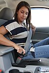

seat-belt

Definition: A seat belt, also known as a safety belt or spelled seatbelt, is a vehicle safety device designed to secure the driver or a passenger of a vehicle against harmful movement that may result during a collision or a sudden stop. A seat belt reduces the likelihood of death or serious injury in a traffic collision by reducing the force of secondary impacts with interior strike hazards, by keeping occupants positioned correctly for maximum effectiveness of the airbag (if equipped), and by preventing occupants being ejected from the vehicle in a crash or if the vehicle rolls over.
Source: Wikipedia
Wikipedia Page (Something wrong with this association? Let us know.)
Wikidata Page (Something wrong with this association? Let us know.)
Occurs in: